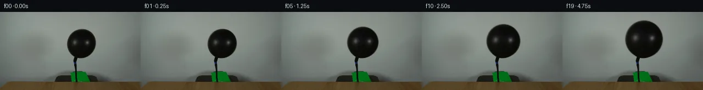

![首帧]()

Round 00
2026-11-05T16:39:09.071065+00:00像素候选变化代码 +152/−0inspection 更新
pixels 45ca4b5acfe06c03 · code 8eea9818e6983895
查看本轮 generate.py 真实 diff
--- previous/generate.py
+++ current/generate.py
@@ -0,0 +1,152 @@
+"""PixelWorld vision-input case_0038.
+
+Scene: a black balloon on an upward black hose behind a wooden table; air is
+pumped in, so the balloon inflates for 5 s. Everything except the balloon is
+static. Frame 0 is first_frame.png verbatim.
+
+Method (pure local pixel math, see METHOD.md / OBSERVATION.md):
+ * extract the frame-0 balloon disk as an RGBA sprite (analytic supersampled
+ circle alpha; RGB taken exactly from frame 0, zeroed outside the disk);
+ * scale the sprite per frame with radius from constant-volume-flow inflation
+ r(t) = (r0^3 + t*(r1^3-r0^3)/19)^(1/3), keeping the sphere's bottom tangent
+ point fixed at the hose knot (cy(t) = 58 - (r(t)-r0), cx = 148);
+ * composite over the untouched frame 0 at sub-pixel precision (8x supersample).
+"""
+from pathlib import Path
+import numpy as np
+from PIL import Image, ImageDraw
+
+import artifact_io
+
+HERE = Path(__file__).parent
+SS = 8 # supersampling factor for sub-pixel compositing
+CX, CY0, R0, R1 = 148.0, 58.0, 26.0, 34.5
+BOTTOM_Y = CY0 + R0 # fixed sphere-bottom tangent at the knot (~84)
+
+# sprite crop around the frame-0 balloon (keeps clear of knot/hose below y~84)
+X0, Y0, X1, Y1 = 118, 28, 178, 86
+
+
+def radius_at(t):
+ return (R0 ** 3 + t * ((R1 ** 3 - R0 ** 3) / 19.0)) ** (1 / 3.0)
+
+
+def make_sprite(base):
+ """RGBA sprite of the frame-0 balloon disk with analytic AA alpha."""
+ h, w = Y1 - Y0, X1 - X0
+ yy, xx = np.mgrid[0:h, 0:w]
+ # 4x4 analytic coverage of circle r=R0 centered at balloon center
+ cov = np.zeros((h, w), dtype=np.float64)
+ n = 4
+ for iy in range(n):
+ for ix in range(n):
+ px = X0 + xx + (ix + 0.5) / n
+ py = Y0 + yy + (iy + 0.5) / n
+ d2 = (px - CX) ** 2 + (py - (BOTTOM_Y - R0)) ** 2
+ cov += d2 <= R0 ** 2
+ alpha = np.clip(cov / (n * n), 0, 1)
+ rgb = base[Y0:Y1, X0:X1].astype(np.float64).copy()
+ rgb[alpha == 0] = 0.0 # no wall-colour fringe on scale
+ rgba = np.dstack([rgb, alpha * 255.0]).astype(np.uint8)
+ return Image.fromarray(rgba, "RGBA")
+
+
+def render_frame(base, sprite, t):
+ if t == 0:
+ return base.copy()
+ r = radius_at(t)
+ cy = BOTTOM_Y - r
+ s = r / R0
+
+ sw = max(1, round((X1 - X0) * s * SS))
+ sh = max(1, round((Y1 - Y0) * s * SS))
+ hi_sprite = sprite.resize((sw, sh), Image.BICUBIC)
+
+ hi = Image.new("RGBA", (256 * SS, 144 * SS), (0, 0, 0, 0))
+ rel_cx = (CX - X0) * s * SS
+ rel_cy = (CY0 - Y0) * s * SS
+ px = int(round(CX * SS + SS / 2 - rel_cx))
+ py = int(round(cy * SS + SS / 2 - rel_cy))
+ hi.paste(hi_sprite, (px, py), hi_sprite)
+
+ small = hi.resize((256, 144), Image.BILINEAR)
+ ov = np.asarray(small).astype(np.float64)
+ a = ov[:, :, 3:4] / 255.0
+ out = ov[:, :, :3] * a + base.astype(np.float64) * (1.0 - a)
+ return np.clip(out, 0, 255).astype(np.uint8)
+
+
+def build_transition_sheet(frames):
+ picks = [0, 6, 12, 19]
+ W, H = 256, 144
+ sheet = Image.new("RGB", (4 * W, 2 * H + 44), (24, 27, 34))
+ d = ImageDraw.Draw(sheet)
+ for i, t in enumerate(picks):
+ d.text((i * W + 6, 4), f"frame {t:02d}", fill=(255, 255, 255))
+ sheet.paste(Image.fromarray(frames[t]), (i * W, 22))
+ if t < 19:
… diff truncated; 65 more lines …